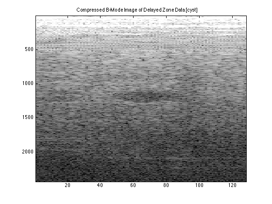

Contents
zone_size=round(max(size(aCyst.data))/5);
zone1=aCyst.data(1:zone_size,:,:);
zone2=aCyst.data(zone_size+1:2*zone_size,:,:);
zone3=aCyst.data(2*zone_size+1:3*zone_size,:,:);
zone4=aCyst.data(3*zone_size+1:4*zone_size,:,:);
zone5=aCyst.data(4*zone_size+1:end,:,:);
center=(zone_size/2);
center_zone1=center;
center_zone2=center+zone_size+1;
center_zone3=center+2*zone_size+1;
center_zone4=center+3*zone_size+1;
center_zone5=center+4*zone_size+1;
timeArray=[0:1/(aCyst.samplingRateMHz*(10^6)):(size(aCyst.data,1)-1)/(aCyst.samplingRateMHz*(10^6))]';
timeArray2=repmat(timeArray,[1,128]);
Zone 1
zf1=(time(center_zone1)*1540)/2;
for bb=-63.5:1:63.5
xe_Z1(bb+64.5)=((aCyst.elementSpacingMM)/1000)*bb;
diag_dist_Z1(bb+64.5)=sqrt(zf1^2 + (xe_Z1(bb+64.5))^2);
time_diag_Z1(bb+64.5)=diag_dist_Z1(bb+64.5)/1540;
end
for bb=-63.5:1:63.5
time_delay_Z1(bb+64.5)=time_diag_Z1(bb+64.5)-time_diag_Z1(65);
end
time_delay_Z12=repmat(time_delay_Z1,[length(zone1),1]);
Zone 2
zf2=(time(center_zone2)*1540)/2;
for bb=-63.5:1:63.5
xe_Z2(bb+64.5)=((aCyst.elementSpacingMM)/1000)*bb;
diag_dist_Z2(bb+64.5)=sqrt(zf2^2 + (xe_Z2(bb+64.5))^2);
time_diag_Z2(bb+64.5)=diag_dist_Z2(bb+64.5)/1540;
end
for bb=-63.5:1:63.5
time_delay_Z2(bb+64.5)=time_diag_Z2(bb+64.5)-time_diag_Z2(65);
end
time_delay_Z22=repmat(time_delay_Z2,[length(zone2),1]);
Zone 3
zf3=(time(center_zone3)*1540)/2;
for bb=-63.5:1:63.5
xe_Z3(bb+64.5)=((aCyst.elementSpacingMM)/1000)*bb;
diag_dist_Z3(bb+64.5)=sqrt(zf3^2 + (xe_Z3(bb+64.5))^2);
time_diag_Z3(bb+64.5)=diag_dist_Z3(bb+64.5)/1540;
end
for bb=-63.5:1:63.5
time_delay_Z3(bb+64.5)=time_diag_Z3(bb+64.5)-time_diag_Z3(65);
end
time_delay_Z32=repmat(time_delay_Z3,[length(zone3),1]);
Zone 4
zf4=(time(center_zone4)*1540)/2;
for bb=-63.5:1:63.5
xe_Z4(bb+64.5)=((aCyst.elementSpacingMM)/1000)*bb;
diag_dist_Z4(bb+64.5)=sqrt(zf4^2 + (xe_Z4(bb+64.5))^2);
time_diag_Z4(bb+64.5)=diag_dist_Z4(bb+64.5)/1540;
end
for bb=-63.5:1:63.5
time_delay_Z4(bb+64.5)=time_diag_Z4(bb+64.5)-time_diag_Z4(65);
end
time_delay_Z42=repmat(time_delay_Z4,[length(zone4),1]);
Zone 5
zf5=(time(center_zone5)*1540)/2;
for bb=-63.5:1:63.5
xe_Z5(bb+64.5)=((aCyst.elementSpacingMM)/1000)*bb;
diag_dist_Z5(bb+64.5)=sqrt(zf5^2 + (xe_Z5(bb+64.5))^2);
time_diag_Z5(bb+64.5)=diag_dist_Z5(bb+64.5)/1540;
end
for bb=-63.5:1:63.5
time_delay_Z5(bb+64.5)=time_diag_Z5(bb+64.5)-time_diag_Z5(65);
end
time_delay_Z52=repmat(time_delay_Z5,[length(zone5),1]);
All Zones
time_delay=[time_delay_Z12;time_delay_Z22;time_delay_Z32;time_delay_Z42;time_delay_Z52];
for dd=1:length(timeArray)
time_withDelays(dd,:)=timeArray2(dd,:)+time_delay(dd,:);
end
for hh=1:128
temp=interp1(time_withDelays(:,hh),squeeze(aCyst.data(:,hh,:)),timeArray2(:,hh),'linear',0);
reshaped_interp(:,hh,:)=reshape(temp,[2432,1,128]);
end
for jj=1:128
for kk=1:2432
zone_interp(kk,jj)=sum(reshaped_interp(kk,:,jj));
end
end
figure;
imagesc(20*log10(abs(hilbert(zone_interp))),[20,80])
title('Compressed B-Mode Image of Delayed Zone Data [cyst]')
colormap('gray')
